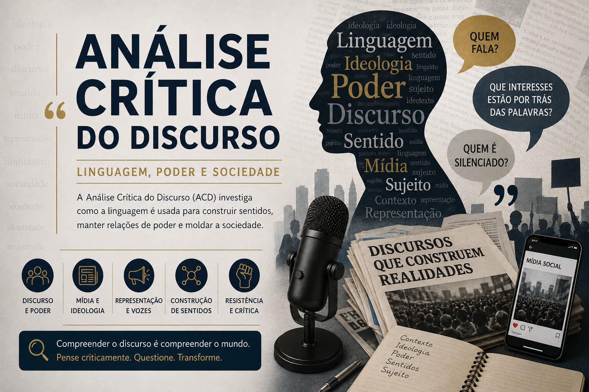

Análise Crítica do Discurso (ACD): linguagem, poder e sociedade
A Análise Crítica do Discurso (ACD) investiga como a linguagem participa da construção das
relações de poder, das ideologias, das identidades sociais e das formas de representação presentes na
sociedade contemporânea.
Mais do que compreender estruturas linguísticas, a ACD busca analisar como discursos políticos, midiáticos,
institucionais e culturais influenciam comportamentos, percepções e formas de organização social.
Nesta seção do Mestre Kira, você encontrará conteúdos voltados ao estudo das relações entre
linguagem, mídia, política, tecnologia, ideologia e produção de sentidos, articulando teoria e análise
crítica de fenômenos discursivos contemporâneos.

O que você encontrará nesta seção
Discurso e poder;
Linguagem e ideologia;
Discursos políticos e polarização;
Mídia, persuasão e manipulação;
Representação social e identidades;
Discursos digitais e redes sociais;
Algoritmos, mídia e circulação de sentidos;
Práticas discursivas contemporâneas.
Os conteúdos possuem abordagem didática e crítica, sendo indicados para estudantes de Letras, pesquisadores,
professores, vestibulandos e leitores interessados nos estudos discursivos e nas relações entre linguagem e
sociedade.
Os conteúdos desta seção são produzidos por
Leildo Gonçalves,
professor de Língua Portuguesa, pesquisador e criador do
Mestre Kira,
projeto educacional voltado à linguagem, redação e tecnologia aplicada à educação.